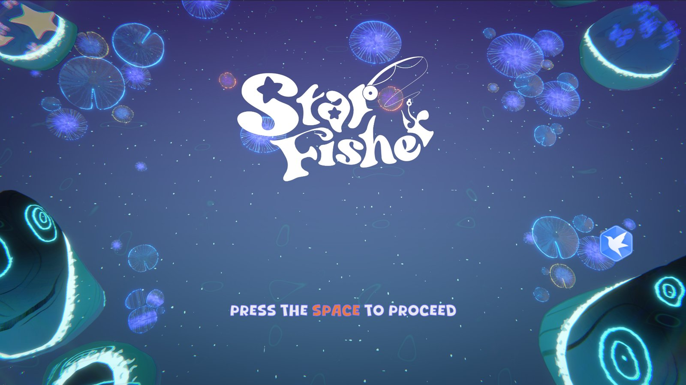

海底主题的多人对抗游戏，为 Xbox Adaptive Controller 设计：操控一条鱼伸出鱼钩钓水母，钓到的水母像贪吃蛇一样跟在身后，送回海葵基地得分；钩到别人的链子就能把它打断。CMU ETC BVW 第 3 轮，两周完成。

BVW 第 3 轮的命题是为 Xbox Adaptive Controller（面向行动不便玩家的无障碍手柄）设计游戏：输入只有少数几个大按钮和扳机，所以玩法必须简单到用两三个输入就能玩，又要在 2–4 人同场时有足够的对抗。
我们把“黄金矿工”和“贪吃蛇”合在了一起：玩家是一条鱼，用 LT / RT 转向，按 A 伸出可伸缩的鱼钩钓水母；钓到的水母串成一条链跟在身后，带回海葵基地就得分。链子越长分越多，但也越容易被别人钩断——攒到 3 只以上还能按 B 换一颗星星炸弹，把周围的对手炸晕。一局 120 秒，每 20 秒刷新一批水母。